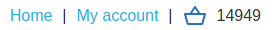
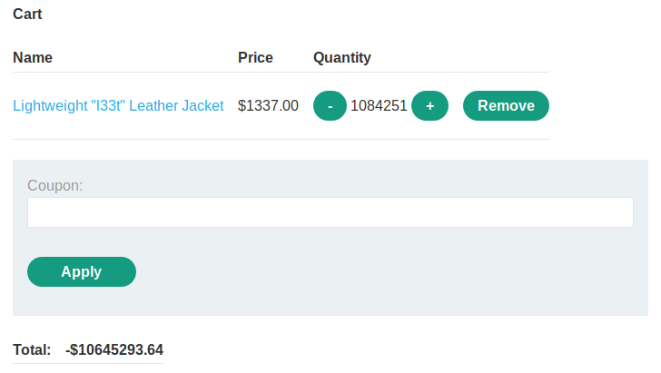

Low-level logic flaw: int overflow
If Web Application doesn't adequately validate user input, we can exploit a logic flaw in its purchasing workflow to buy items for an unintended price.
In this case the value of the cart can be overflowed, then become negative and then another time positive.
Check for Vulnerability
The WebApplication has a logic in the request to prevent users from ordering more units than are currently in stock
It accept max 2 digits value (0 to 99) for the “quantity” parameter
Anyway we can continue to add orders of the same article to the Cart!
To check if a vulnerability exist we need to check if the value of the cart can go negativeUsually for Back End Programming languages the max value of
int is 2.147.483.647 . This value is valid for 32 bit computers 2
31-1. After this value there could be an overflow.
We will use this configuration to repeatedly issue the base request unmodified(choose an high value item to speed up the process):
◇ Payloads → Payloads Sets → Payload type → Null Payloads
◇ Payloads → Payloads Options → Continue Indefinitely
◇ Resource Pool → maximum concurrent requests = 1
Exploit: Overflow attack
• In the example we send to Burp Intruder a request for an object of value 1337 and quantity 99(max value admitted)
• In this way we will add at every request 99 quantity of the same product to the Cart, this because we want to trigger an overflow
• After 2.147.483.647/(99*1337)=16224,19.. requests we should we should have a
int overflow and a negative number on our cart
◇ This mean that to trigger an overflow we need 16224*99=1606176 products in the cart
• the value will loop back to the minimum possible value (-2,147,483,647) and from it will increase
• We want increase the value of the cart and settle it a little bit under 0, so we need other 16224 requests, so
in total 16224*2=32448 requestsWARNING: Because i think these are would been too much requests for a lab, they are been decreasedTo trigger an overflow we need only 162 requests in this lab